Accelerating graph algorithms
Califrais workshop
Guillaume Dalle (ENPC)
2026-04-14
A little about me
Website: gdalle.github.io
CV
- 2019-2022: PhD at ENPC
- 2022: visiting student at MIT
- 2023-2024: postdoc at EPFL
- 2025-: researcher at ENPC
Research topics
- Operations research
- Machine learning
- High-performance computing
ACME project
- Approvisionnement Collaboratif Multimodal Ecologique: unlocking horizontal collaboration in the supply chain
- 3 disciplines: mathematics, computer science, economics
- 4 universities (ENPC, TSE, Inria, IMB) with budget to recruit 6 PhD students, 2 postdocs, 2 research engineers
- Industrial partners: Califrais, AI Cargo Foundation, Renault and others
Slides
Available at gdalle.github.io/CalifraisWorkshop2026
Optimization as a subroutine
Multi-agent pathfinding

Traffic equilibrium
Decision-focused learning
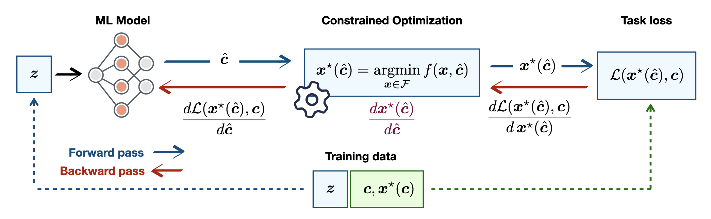
Bilevel programming
\[ \begin{aligned} \min_{x, y} ~ & F(x, y) \\ \mathrm{s.t.} ~ & G(x, y) \geq 0 \\ & y \in \arg\min_y ~\{f(x, y): g(x, y) \geq 0\} \end{aligned} \]
Common aspects of subroutines
- Executed many times in parallel
- Executed many times in a sequence
- Executed many many times on the same instance
- High precision is not crucial
Potential for parallelism
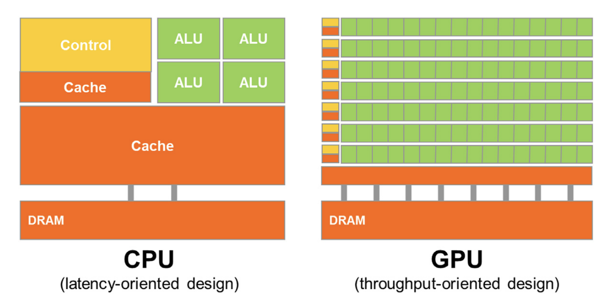
Shortest path algorithms
Bellman-Ford
- Dynamic programming: update the distance estimate from \(s\) to \(v\) using at most \(k\) steps \[ d_k(s, v) = \min_{u \in N(v)} \{d_{k-1}(s, u) + w(u, v)\} \]
- Complexity: \(O(E V)\) (slow!).
Dijkstra
- Dynamic programming: update the distance estimate from \(s\) to \(v\) from closest to furthest vertex.
- Uses a priority queue (or heap) to keep track.
- Complexity: \(O(E + V \log V)\) (fast!)
A*
- Same as Dijkstra, but change the priorization: from most promising to least promising vertex.
- Complexity: depends on the chosen heuristic.
Good on CPU, bad on GPU
- Dijkstra and A* are heavily sequential
- They make use of complex storage structures
- Graph data is sparse and irregular
Sparse linear algebra for parallel shortest paths
Graphs are matrices
Adjacency matrix:
\[ A_{u, v} = \begin{cases} 1 & \text{if $v \in N(u)$} \\ 0 & \text{otherwise} \end{cases} \]
Incidence matrix: \[ B_{e, v} = \begin{cases} 1 & \text{if $e = \{u, v\}$} \\ 0 & \text{otherwise} \end{cases} \]
Neighborhoods are multiplications
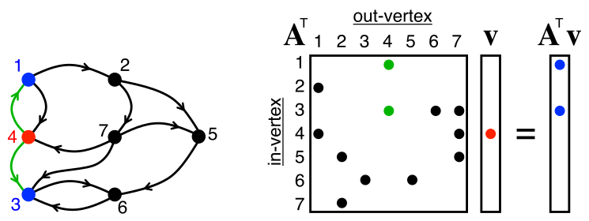
The GraphBLAS standard
- Goal: express graph primitives in the language of linear algebra (same as BLAS).
- Uses custom semirings for algebraic operations.
- Allows easy expression of sophisticated algorithms like Bellman-Ford.
Sparse matrix formats - COO, CSR
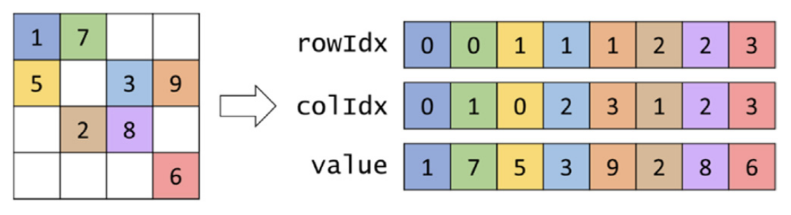
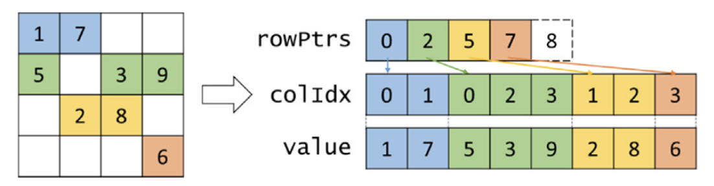
Matrix-vector products on GPU
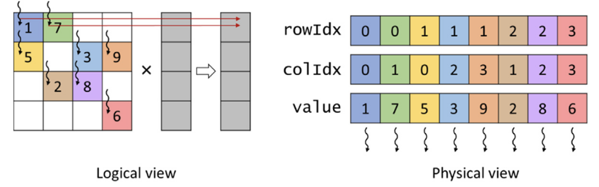
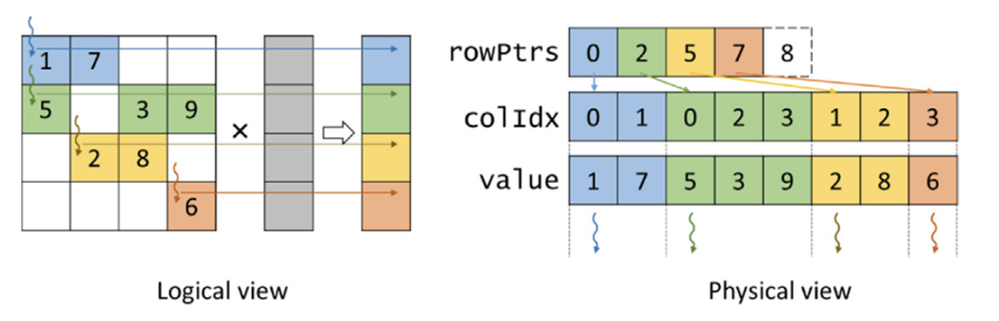
Better formats? ELL
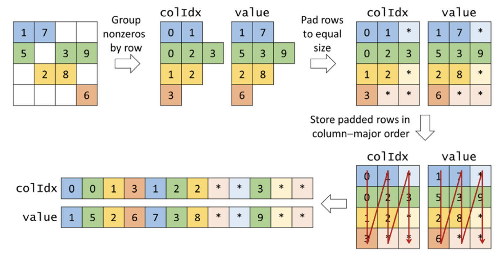
Better formats? ELL (2)
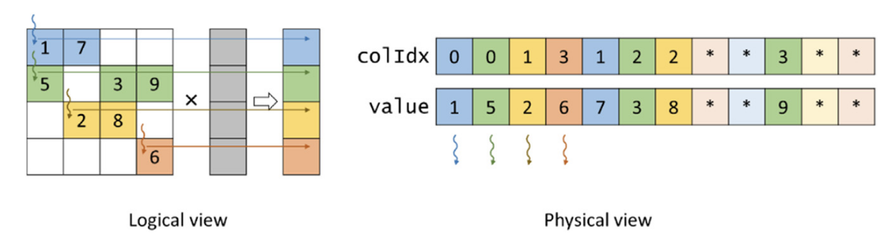
Even better formats?
Adapt to the data at hand!
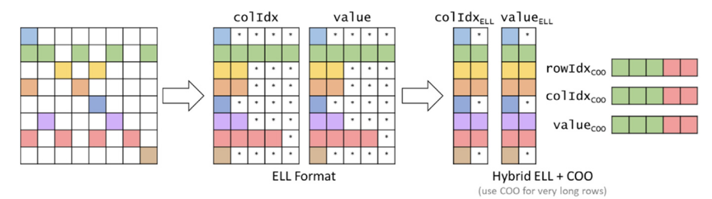
Preprocessing for parallel shortest paths
One graph, many queries
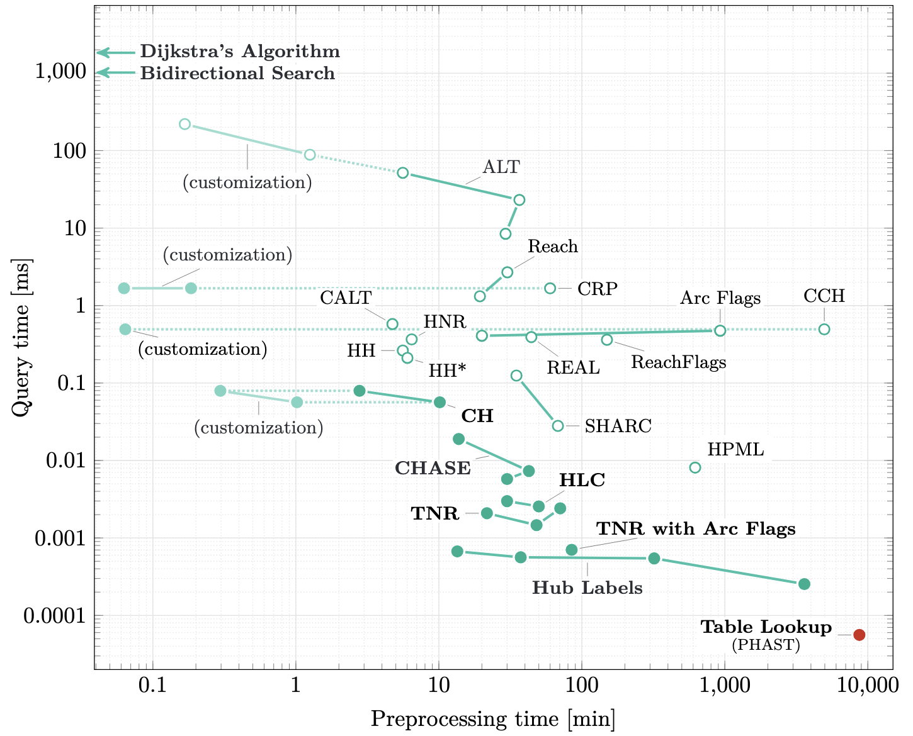
Contraction hierarchies
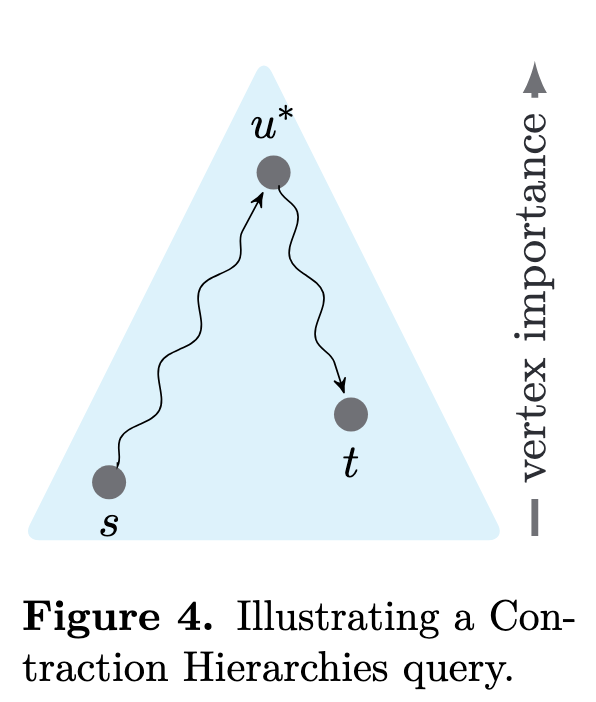
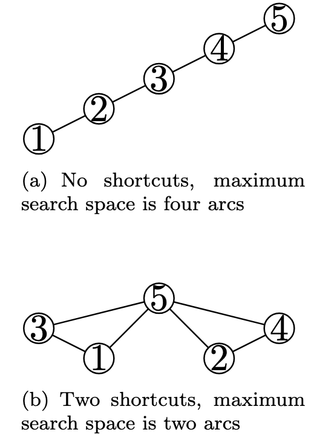
PHAST
- Tricks to speed up contraction hierarchies:
- Reduce problem to directed acyclic graph
- Reorder vertices to improve memory locality
- Tricks to run it on GPU:
- Process topological levels in parallel
- Process several shortest path trees at once
Customizable contraction hierarchies
- Tricks to update the contraction hierarchy when weights change
- Contract vertices in a weight-agnostic way
Other settings
- Railway networks
- Multimodal city networks
- Time-dependent networks
Challenges ahead
Algorithmic decisions
- Preprocessing time vs query time
- Theoretical complexity doesn’t tell the whole story
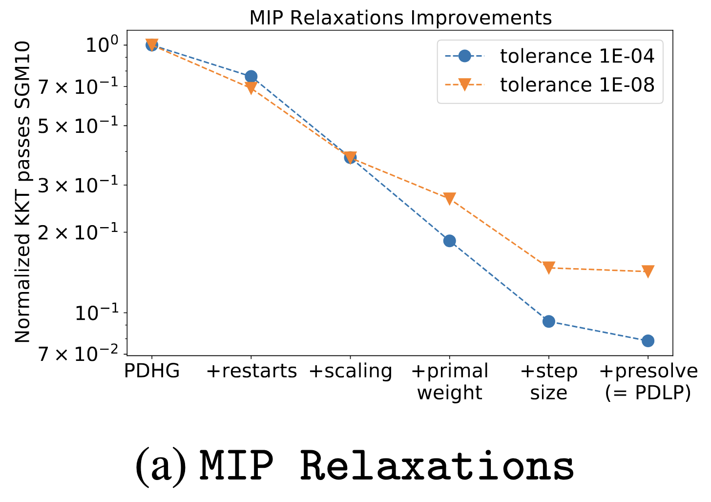
Hardware-agnostic code
- How to run on every platform?
- Write portable “kernels” with KernelAbstractions.jl
- Combine CPU and GPU
Role of LLMs
- Easier to write GPU kernels or implement algorithms from papers
- Code generation is no longer a bottleneck
- Ensuring correctness is the new frontier
Software funding and maintenance
- Research software developers are more relevant than ever
- Requires mathematical and computer science expertise
- Undervalued activity in our research ecosystem
References
Applegate, David, Mateo Diaz Diaz, Oliver Hinder, et al. 2021. “Practical Large-Scale Linear Programming Using Primal-Dual Hybrid Gradient.” Thirty-Fifth Conference on Neural Information Processing Systems, May. https://openreview.net/forum?id=_eXwwWOyqT_.
Bast, Hannah, Daniel Delling, Andrew Goldberg, et al. 2016. “Route Planning in Transportation Networks.” In Algorithm Engineering: Selected Results and Surveys, edited by Lasse Kliemann and Peter Sanders. Lecture Notes in Computer Science. Springer International Publishing. https://doi.org/10.1007/978-3-319-49487-6_2.
Beck, Yasmine, and Martin Schmidt. 2021. A Gentle and Incomplete Introduction to Bilevel Optimization. No. 17182. Optimization Online. https://optimization-online.org/?p=17182.
Delling, Daniel, Andrew V. Goldberg, Andreas Nowatzyk, and Renato F. Werneck. 2013. “PHAST: Hardware-accelerated Shortest Path Trees.” Journal of Parallel and Distributed Computing, Best Papers: International Parallel and Distributed Processing Symposium (IPDPS) 2010, 2011 and 2012, vol. 73 (7): 940–52. https://doi.org/10.1016/j.jpdc.2012.02.007.
Dibbelt, Julian, Ben Strasser, and Dorothea Wagner. 2016. “Customizable Contraction Hierarchies.” ACM J. Exp. Algorithmics 21 (April): 1.5:1–49. https://doi.org/10.1145/2886843.
Geisberger, Robert, Peter Sanders, Dominik Schultes, and Daniel Delling. 2008. “Contraction Hierarchies: Faster and Simpler Hierarchical Routing in Road Networks.” In Experimental Algorithms, edited by Catherine C. McGeoch. Springer. https://doi.org/10.1007/978-3-540-68552-4_24.
Hwu, Wen-mei W., David B. Kirk, and Izzat El Hajj. 2022. Programming Massively Parallel Processors: A Hands-on Approach. Morgan Kaufmann.
Kepner, Jeremy, and John Gilbert. 2011. Graph Algorithms in the Language of Linear Algebra. SIAM.
Lu, Haihao, and Jinwen Yang. 2025. “cuPDLP.jl: A GPU Implementation of Restarted Primal-Dual Hybrid Gradient for Linear Programming in Julia.” Operations Research 73 (6): 3440–52. https://doi.org/10.1287/opre.2024.1069.
Mandi, Jayanta, James Kotary, Senne Berden, et al. 2024. “Decision-Focused Learning: Foundations, State of the Art, Benchmark and Future Opportunities.” Journal of Artificial Intelligence Research 80 (August): 1623–701. https://doi.org/10.1613/jair.1.15320.
Mohanty, Sharada, Erik Nygren, Florian Laurent, et al. 2020. Flatland-RL : Multi-Agent Reinforcement Learning on Trains. http://arxiv.org/abs/2012.05893.
W. Axhausen, Kay, Andreas Horni, and Kai Nagel, eds. 2016. The Multi-Agent Transport Simulation MATSim. Ubiquity Press. https://doi.org/10.5334/baw.